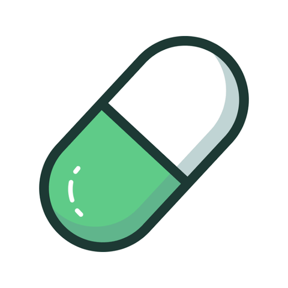

Bonus pump.fun 10$–50$
App per comprare e vendere memecoin su Solana. Iscriviti dal link di invito e fai il primo acquisto di crypto dentro l'app con Apple Pay o carta. pump.fun abbina il primo acquisto fino a un massimo personale, da 10$ a 50$, che vedi in app prima di pagare. In base all'offerta il bonus arriva a rate, con 5 giorni di trading entro 10, oppure in un'unica volta.
Come si fa, in breve
- Apri il link dal telefono e scarica l'app partendo da lì. Controlla che la pagina dica chi ti ha invitato.
- Crea l'account e applica subito il codice di invito, prima di comprare qualsiasi cosa.
- Tocca Deposita: vedi il tuo premio massimo (10$–50$) e se arriva a rate. Fai uno screenshot.
Quando l'account è attivo:
- Compra in app con Apple Pay o carta almeno l'importo mostrato, più qualche dollaro di commissione.
- Se il bonus è a rate: fai un'operazione in app in 5 giorni diversi entro 10 giorni.
- Non prelevare niente finché il bonus non è arrivato tutto.
❌ Lo perdi se…
- porti crypto da un altro exchange o wallet invece di comprarle in app
- con il bonus a rate salti dei giorni: ogni giorno saltato è una rata persa
- tieni aperte posizioni su memecoin, che possono perdere il 20–30% in pochi minuti
Il bonus è erogato direttamente da pump.fun. GoatLink non chiede alcun pagamento.
Guida completa, regole e casi particolari
Guida completa passo-passo
- Apri il link di invito dal telefono e scarica l'app pump.fun partendo da lì. Prima di creare l'account controlla che la pagina indichi chi ti ha invitato: senza invito il bonus non c'è.
- Crea l'account. Devi essere un utente nuovo. Applica il codice di invito subito, appena apri l'app per la prima volta, e comunque prima del primo acquisto.
- Tocca Deposita: l'app ti mostra il tuo premio massimo (da 10$ a 50$, è personale) e se il bonus arriva a rate o in un'unica volta. Fai uno screenshot dell'offerta prima di pagare.
- Compra crypto dentro l'app con Apple Pay o carta (fornitore integrato, es. MoonPay) per almeno l'importo massimo mostrato, più qualche dollaro per la commissione del pagamento. Comprare di più non aumenta il bonus; i trasferimenti da exchange o wallet esterni non valgono.
- Se il bonus è a rate: fai almeno una transazione (acquisto o vendita) dall'app mobile in 5 giorni diversi entro 10 giorni dall'acquisto. I giorni non devono essere consecutivi; ogni giorno completato sblocca una rata e al quinto hai l'importo intero.
- Se il bonus è in un'unica volta: non servono i 5 giorni. pump.fun decide sull'accredito entro il termine mostrato in app (in genere un paio di giorni) e può fare controlli in più.
- In entrambi i casi non prelevare le crypto del primo acquisto finché il bonus non è stato accreditato per intero.
✅ Buono a sapersi
- Dall'Italia funziona: app, acquisto con Apple Pay e riquadro della promo li abbiamo provati noi.
- Commissioni ufficiali: 0,40% di piattaforma per chi si iscrive con un invito (0,45% senza), più quella del pool: 1,25% sulle monete ancora in bonding curve, da 1,25% a 0,30% su quelle già passate su PumpSwap, in base alla capitalizzazione.
- Sulle monete più grandi paghi quindi circa lo 0,70% a operazione: con pochi dollari al giorno sono centesimi.
- Chi invita può ricevere lo stesso bonus dell'amico idoneo e in più guadagna a vita il 37,5% delle commissioni di piattaforma pagate dai suoi invitati (boost 1,5x, il 4x è finito il 1° novembre), più una parte delle loro ricompense Callout.
⚠️ Dove si perde il bonus
- Importo e modalità sono personali. Dall'8 novembre 2026 il massimo (da 10$ a 50$) e il pagamento a rate o in un'unica volta li decide l'offerta in app, e pump.fun può cambiarli in qualsiasi momento.
- Il solo deposito non basta. Con il bonus a rate, senza i 5 giorni di trading il match non arriva, e un giorno saltato è una rata persa.
- Le memecoin possono perdere il 20–30% in pochi minuti. Non tenere posizioni aperte: compra pochi dollari e rivendi subito, altrimenti il bonus se ne va in perdite.
- Su Solana i trade sulle memecoin finiscono spesso nel mirino dei bot: imposta una slippage bassa prima di confermare.
- Il fornitore del pagamento (es. MoonPay) può chiederti documento, selfie o estratto conto, e applica la sua commissione: guardala nel riepilogo prima di confermare.
- I premi sono soggetti a verifica, a regole di idoneità e a un budget: pump.fun può cambiare o chiudere il programma in qualsiasi momento.
- pump.fun non è una banca: i token che compri non hanno nessuna tutela e possono andare a zero.
💡 Bonus a rate: il modo più economico per fare i 5 giorni
Ogni giorno compra 2–5$ di una moneta grande, già passata su PumpSwap e con molto volume, e rivendila subito. Su queste monete la commissione del pool scende fino allo 0,30%: con quella di piattaforma paghi circa lo 0,70% per lato, cioè pochi centesimi al giorno, e l'esposizione al prezzo dura pochi secondi.
Nella schermata della promo non è indicato un importo minimo per far valere il giorno, e l'idoneità la decide pump.fun: operazioni minuscole e identiche ripetute ogni giorno potrebbero non essere considerate valide. Se il giorno non risulta completato entro il giorno dopo, scrivi al supporto dall'app prima di continuare.
Perché pump.fun
Fino a 50$ pari a quanto compri è uno dei rapporti più alti del catalogo, ma l'importo è personale e il rischio vero non sono le commissioni: sono le memecoin. Fatta con pochi dollari al giorno su monete grandi e rivendendo subito, costa pochi euro.
👍 Pregi
- Match fino a 50$ sul primo acquisto
- A volte pagato in un'unica volta, senza i 5 giorni
- Commissioni sotto l'1% sulle monete grandi
👎 Contro
- Memecoin: si può perdere molto in pochi minuti
- Importo personale, può essere sotto i 50$
- Programma a budget, modificabile in ogni momento
Domande frequenti sul bonus pump.fun
Quanto vale il bonus pump.fun?
Il bonus arriva a rate o tutto insieme?
Cosa devo fare per ottenerlo?
I 5 giorni devono essere consecutivi?
Quando arriva il bonus?
Vale se trasferisco SOL da un exchange?
Quanto costa fare i 5 giorni di trading?
Posso perdere soldi?
Ultimo aggiornamento: